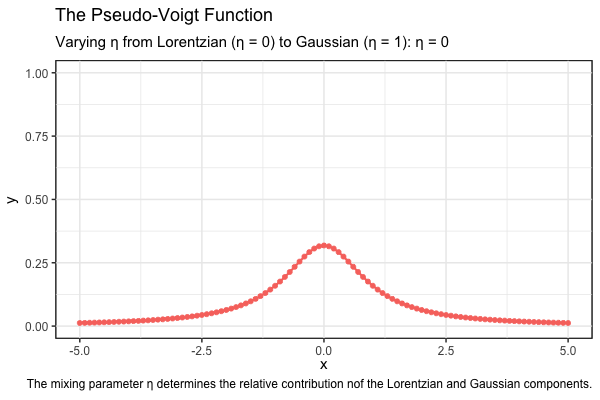

The Pseudo-Voigt Function
Maths
Preprocessing
Spectroscopy
In spectroscopy, especially laser spectroscopy, accurate modeling of spectral line shapes is essential for analyzing the physical and chemical properties of matter. A commonly used approximation is the pseudo-Voigt function, which serves as a simplified representation of the Voigt profile. The Voigt profile, defined as the convolution of a Gaussian function and a Lorentzian function, accurately describes the line shapes, but its calculation is often time consuming.
Background
The pseudo-Voigt function represents a significant advancement in spectroscopy, emerging from the long-standing challenge of accurately modeling spectral line shapes. While Gaussian and Lorentzian profiles have been fundamental tools in spectral data analysis for decades, they often fell short in capturing the complexity of spectral signal. In the mid-20th century, researchers began to recognize the inherent limitations of relying solely on Gaussian (normal distribution) and Lorentzian (Cauchy distribution) profiles. Complex spectral lines often result from multiple broadening mechanisms, including:
- Doppler broadening, which occurs due to thermal motion of particles
- Collisional broadening, resulting from interactions between particles
- Instrumental broadening introduced by measurement apparatus
When Doppler broadening dominates, the shape of a spectral line is best modeled by a Gaussian profile. In contrast, collisional broadening typically leads to a Lorentzian line shape. However, in many cases, the observed line shape results from the interplay of multiple broadening mechanisms. As a result, the pseudo-Voigt function often provides a more accurate representation of the line shape. Indeed, the pseudo-Voigt function can account for both collisional and Doppler broadening effects. Moreover, natural broadening resulting from the finite lifetime of excited states can also be modeled using the pseudo-Voigt function. Therefore, the pseudo-Voigt function emerged as an elegant solution to these challenges. By combining the characteristics of Gaussian and Lorentzian profiles, it offers a more nuanced representation of spectral line shapes.
The pseudo-Voigt function was first derived by Thompson, Cox, and Hastings in 1987 [1], in their study describing the application of the Rietveld refinement technique to synchrotron X-ray data collected from a capillary sample of Al₂O₃ using Debye–Scherrer geometry at the Cornell High Energy Synchrotron Source (CHESS). Their analysis showed that individual peak shapes are accurately modeled by a pseudo-Voigt function, in which the Gaussian and Lorentzian half-widths vary, respectively, with the Bragg angle due to instrumental resolution and particle-size broadening.
Voigt profile
Fundamentally, the pseudo-Voigt function is an approximation of the more precise Voigt profile (named after German physicist Woldemar Voigt). The Voigt profile (\(V\)) represents the exact convolution of Gaussian and Lorentzian profiles, providing a more accurate description of spectral line shapes, particularly when both Doppler and Lorentzian broadening are significant.
\[ V(x;\sigma,\gamma) = \int_{-\infty}^{\infty} G(x';\sigma) L(x - x';\gamma) \, dx' \]
The Voigt profile can also be expressed using the Faddeeva function \(\omega(z)\), given by:
\[ w(z) = e^{-z^2} \left( 1 + \frac{2i}{\sqrt{\pi}} \int_0^z e^{t^2} \, dt \right) \] where \(z\) is a complex number. Using the Faddeeva function, the Voigt profile is: \[ V(x; \sigma, \gamma) = \frac{1}{\sigma\sqrt{2\pi}}\Re\left[w\left( \frac{x + i\gamma}{\sigma\sqrt{2}} \right)\right] \]
where \(\Re[w(z)]\) denotes the real part of the Faddeeva function.
However, the Voigt profile is computationally intensive, requiring efficient numerical methods to accurately evaluate the convolution integral. This complexity has led to the development of approximations, such as the pseudo-Voigt function, which strike a balance between computational efficiency and maintaining acceptable levels of accuracy in the spectral line shape.
Pseudo-Voigt function
The pseudo-Voigt function (\(pV\)) is a linear combination of a Gaussian (\(G\)) and a Lorentzian (\(L\)) function, and is defined as:
\[ pV(x;\eta) = ηG(x;\sigma) + (1-η)L(x;\gamma) \]
\[ G(x;\sigma) = \frac{1}{\sigma \sqrt{2\pi}} e^{-\frac{x^2}{2\sigma^2}} \]
\[ L(x; \gamma) = \frac{\gamma}{\pi (x^2 + \gamma^2)} \]
where, \(\eta\) is a mixing parameter that determines the relative contribution of the Lorentzian (\(\eta = 0\)) and Gaussian (\(\eta = 1\)) components. Here, the parameters \(\sigma\) and \(\gamma\) represent, respectively, the standard deviation of the Gaussian component, related to the full width at half maximum (FWHM) of the Gaussian by \(w_G = 2\sqrt{2\ln 2} \, \sigma\), and the half-width at half maximum (HWHM) of the Lorentzian component, related to the Lorentzian FWHM by \(w_L = 2\gamma\).
The following animation illustrates how the pseudo-Voigt function varies with the mixing parameter \(\eta\). As \(\eta\) increases from 0 to 1, the contribution of the Gaussian component becomes more significant.
Show the code
library(ggplot2)
library(gganimate)
gaussian <- function(x, x_c, w_G, A, y_0) {
y_0 + A / (w_G * sqrt(pi / (4 * log(2)))) * exp(-4 * log(2) * (x - x_c)^2 / w_G^2)
}
lorentzian <- function(x, x_c, w_L, A, y_0) {
y_0 + A / pi * w_L / ((x - x_c)^2 + w_L^2)
}
pseudo_voigt <- function(x, x_c, w_L, w_G, A, y_0, eta) {
y_0 + A * (eta * gaussian(x, x_c, w_G, A, y_0) + (1 - eta) * lorentzian(x, x_c, w_L, A, y_0))
}
x_c <- y_0 <- 0; w_L <- w_G <- A <- 1
eta_values <- seq(0, 1, by = 0.05)
df <- data.frame(x = seq(-5, 5, by = 0.1))
for (eta in eta_values) {
df[[paste0("η = ", eta)]] <- pseudo_voigt(df$x, x_c, w_L, w_G, A, y_0, eta)
}
df_long <- tidyr::pivot_longer(df, cols = -x, names_to = "eta", values_to = "y")
p <- df_long |>
ggplot(aes(x = x, y = y, colour = eta)) +
geom_line(linewidth = 1) +
scale_y_continuous(limits = c(0,1)) +
geom_point(size = 2) +
theme_bw(base_size = 15) +
labs(
x = "x",
y = "y",
title = "The Pseudo-Voigt Function",
subtitle = paste0("Varying η from Lorentzian (η = 0) to Gaussian (η = 1): ", "{closest_state}"),
caption = "The mixing parameter η determines the relative contribution of the Lorentzian and Gaussian components.") +
theme(
legend.position = "none",
plot.title = element_text(hjust = 0, size = 18, face = "bold"),
plot.subtitle = element_text(hjust = 0),
panel.background = element_rect(colour = "black", linewidth = 1)
)
anim <- p +
transition_states(eta, transition_length = 2, state_length = 1) +
ease_aes('exponential-in-out') +
shadow_mark(alpha = 2/10, size = 0.1)
animate(
anim,
nframes = 100,
fps = 10,
width = 600,
height = 400,
renderer = gifski_renderer()
)
Extended pseudo-Voigt function
In the early 2000s, Ida et al. [2] refined the pseudo-Voigt function by introducing an extended formula designed to more accurately approximate the Voigt profile. This formula is given by:
\[ epV(x;\eta_L, \eta_I, \eta_P) = (1 - \eta_L - \eta_I - \eta_P)G(x;\sigma) + \eta_L L(x; \gamma) + \eta_I F_I(x;\gamma_I) + \eta_P F_P(x;\gamma_P) \]
where \(F_I\) and \(F_P\) are intermediate functions that represent the transition between the Lorentzian and Gaussian profiles, respectively. \(F_I\) is an irrational function involving a square root, while \(F_P\) is the squared hyperbolic secant function. These functions are defined as follows:
\[ F_I(x;\gamma_I) = \frac{1}{2\gamma_I}\left( 1 + \left(\frac{x}{\gamma_I}\right)^2 \right)^{-3/2} \]
\[ F_P(x;\gamma_P) = \frac{1}{2\gamma_P}\text{sech}^2\left(\frac{x}{\gamma_P}\right) \]
The FWHMs are given by \(w_I = 2 \gamma_I \sqrt{(2^{2/3} - 1)}\), and \(w_P = 2 \gamma_P \ln{(\sqrt{2} + 1)}\). A Gaussian profile is obtained when the mixing parameters are set to \(\eta_L = \eta_I = \eta_P = 0\), while the Lorentzian contribution is governed by the parameter \(\eta_L\). Specifically, a pure Lorentzian profile arises when \(\eta_L = 1\). These parameters are constrained to the range from 0 to 1 and must satisfy the condition \(\eta_L + \eta_I + \eta_P = 1\). This constraint defines a 2D simplex within a plane in 3D space, representing all possible combinations of the mixing parameters.
The animation below is a visual representation of the normalized extended pseudo-Voigt profiles, illustrating the transition from Gaussian to Lorentzian shapes as the mixing parameters \(\eta_L, \eta_I\), and \(\eta_P\), are varied simultaneously.
References
P. Thompson, D.E. Cox, and J.B. Hastings, Rietveld refinement of Debye–Scherrer synchrotron X-ray data from Al2O3. J. Appl. Cryst. 20, 79-83, 1987.
T. Ida, M. Ando, H. Toraya, Extended pseudo-Voigt function for approximating the Voigt profile. J. Appl. Cryst. 33, 1311-1316, 2000.